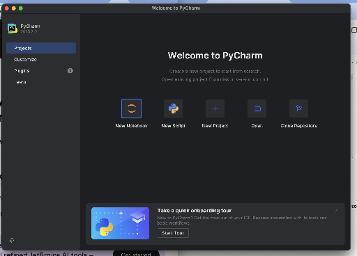
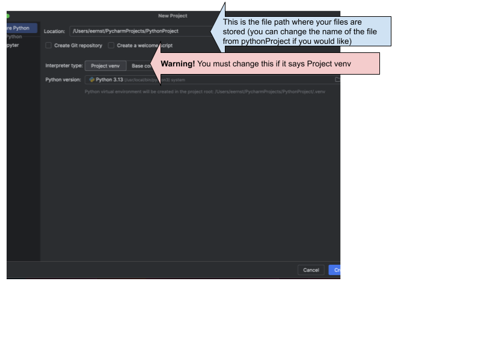
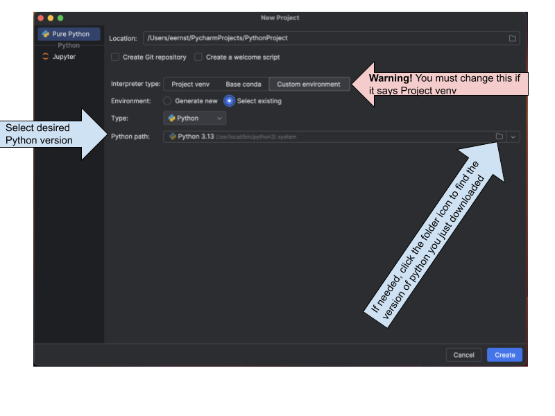

When you write Python programs with PyCharm, you must create a project to keep your code in. You can think of a project as a folder where you put related code. Each project also remembers what Python interpreter should be used, and other special configurations.
You could decide to have one project for the whole semester, but that might get large and unwieldy. Instead, you could have a project called “Homework” where you keep all the code for homework assignments and one called “ICA” where you keep all your code for in-class assignments. Or you could make a project for each individual assignment. Just give them memorable names that don’t duplicate the name of a code file or Python module.
The first time you start up PyCharm, you will see a window like this:

Select “New Project”. If you don’t see the big New Project button, look on the left side for a “+ New…” button and use that. You will then be prompted to choose the location and name for the new project, and the version of Python to use with the project. Warning: do not rush through the next window, the chances are good that the project interpreter will be wrong!
PyCharm will, by default, create a folder in your home directory called pythonProject, and it will put your projects there. You can choose a different location and/or create a new file for your python projects. Then, before you click on the Create button, look carefully at the second line, where it says “Interpreter type”

Pycharm will default to “Project venv”. You do not want to do this. Instead, select “Custom environment” for “Interpreter type”. For the “Environment” make sure that “Select existing” is chosen. The drop-down menu for “Type” should have “Python” selected. The “Python path” may list Python interpreters, you want Python 3.13 (or whatever version you just downloaded). If it is not there, you can click on folder icon at the right to select the desired interpreter.

On a Mac, the Python interpreter is usually found in /Library/Frameworks/Python.framework/Versions/3.13/bin/python3.13 or /usr/local/bin/python3 On Windows, your installation may vary, but it is usually C:\Users\<username>\AppData\Local\Programs\Python\Python313/python.exe Note that <username> should be replaced by your Windows username.
Once you create the project, you will get the most typical view of PyCharm: the project view. On the left you can see the project and any files or subfolders that are a part of it. On the right is the editor window, where you can create and edit programs. The bottom part of the window will display the results of running your code, or give you access to the Python Console.